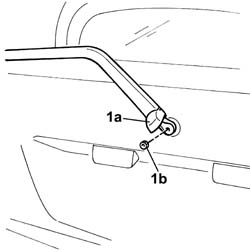

5050C34 rear wiper arm with blade - r+r
- Path
- Procedures > 50 AUXILIARY UNITS > 5050 SCREEN WASHERS AND HEADLAMP WASH/WIPE > 5050C rear wash/wipe > 5050C34 rear wiper arm with blade - r+r
- Kind
- repair procedure (removal / refitting; the operation number is the code)
- Applies to
- all engines; all production periods
- Interactive page
- https://sloeber94.github.io/elrnDB-fDbl/en/#/2584868
Applies to: all engines; all production periods
 Removing
Removing
 Refitting
Refitting1. Open the nut cover (1a) and undo the fixing nut (1b).
Remove the wiper arm.

Applies to: all engines; all production periods
Refitting
RemovingPosition the wiper arm and secure it using the nut.
Close the nut cover.